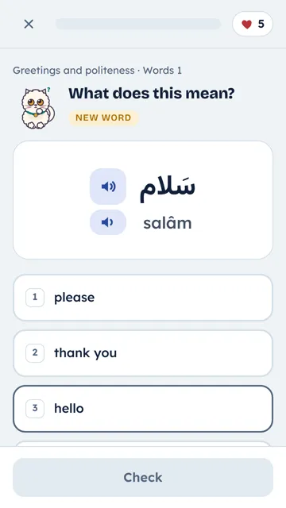
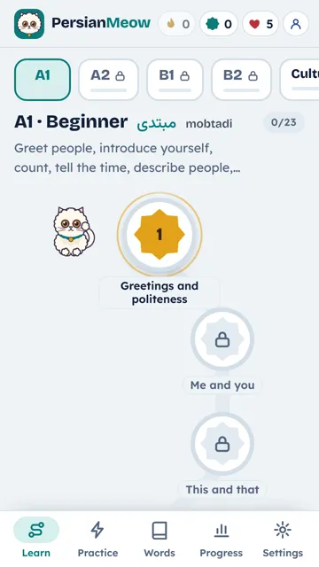
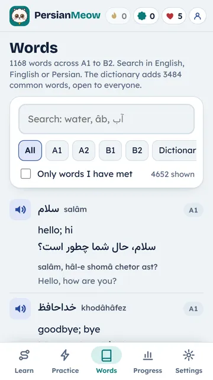
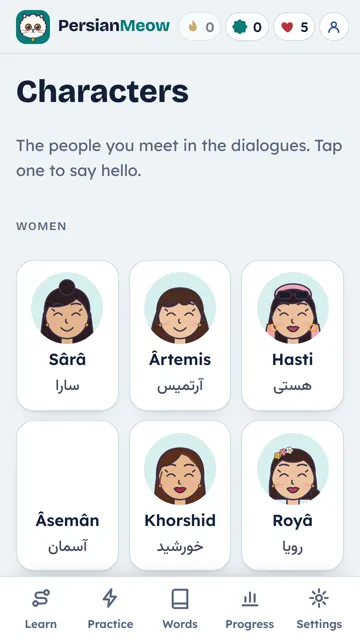

Learn Persian, one short lesson at a time.
You don't need the alphabet to start: every word comes in Finglish, Persian in English letters. Listen, tap, build sentences, and let Pishi the Persian cat keep your streak alive.


Why people learn with PersianMeow
Finglish everywhere
Every Persian word and sentence also comes in English letters, with the vowels Persian script leaves out.
خوبم، مرسی · khubam, mersi
Hear every word
Every word, sentence, dialogue and reading has audio, with a slow button. Native speakers review the pronunciation in the app.
The alphabet, gently
All 32 letters with their joined shapes, example words, and six short lessons. The short vowel marks appear while you need them.
Real conversations
Dialogues with a cast of 21 people, each with a face and a voice, from ordering tea to talking about family.
Remember for good
Spaced review brings back every word just before you forget it. XP, daily goals and a streak on the Persian week.
Culture, not just words
Idioms, fun facts, poetry lines and why Persian is not Arabic, a distant cousin of English, in fact.

A dictionary that talks
- 4,600+ common words, searchable in English, Finglish or Persian.
- Each with an example sentence and its own recording.
- The words you have met in lessons are marked, so you can review them.
From hello to reading the news
Greet people, introduce yourself, count, tell the time, order food.
Talk about your day, family, home, shopping and travel, in dialogues.
Tell stories in the past, give opinions, read short texts.
Follow longer readings, formal and spoken Persian, idioms.
Meet the cast
- Twenty-one characters speak the dialogues, each with a matching voice.
- They react, think and cheer, so lessons feel like a conversation.
- And Pishi, the Persian cat, is with you all the way.

Questions
Is PersianMeow free?
Yes. The whole course, the alphabet, the dictionary and the audio are free. You can use it without an account; a free account saves your progress across devices. If you like it, you can leave a tip on Ko-fi.
Do I need to read the Persian alphabet first?
No. Every word also comes in Finglish (like salâm for hello), so you can start speaking on day one and learn the 32 letters alongside.
Is Persian the same as Farsi?
Yes. Farsi is the Persian name of the language. PersianMeow teaches the Persian spoken in Iran, in its everyday and written forms.
Does Duolingo teach Persian?
No, Duolingo has no Persian course. PersianMeow was made to fill that gap, with the same short-lesson style.
Does it work offline? On my phone?
Yes. Open it in your phone's browser and add it to your home screen: every lesson then works without internet. Android and iPhone apps are on the way.
I'm Persian and something sounds wrong.
Thank you! Sign in and tap "sounds wrong?" next to the word. Native speakers review every report and we re-record the clip.
Your first Persian word is one tap away.
Five minutes a day is enough. Pishi will cheer you on.
Start learning free